Sales Analysis System for Sampath Food City
Python · Pandas · Matplotlib · SOLID · Design Patterns · Pytest · Tox CLI
Project Overview
The Sales Analysis System was developed as an academic software engineering project to address the challenges of manually analysing sales data across Sampath Food City's supermarket branches.
The proposed system processes sales data collected from point-of-sale (POS) systems and helps management identify sales trends, compare branch performance, examine product pricing, understand customer product preferences, and analyse purchase amounts. It was designed to make sales analysis more structured, consistent, and efficient than a manual process.
The project focused not only on implementing the analysis features but also on applying software engineering principles to improve code readability, maintainability, extensibility, and reliability.
Key Features
1. Monthly Sales Analysis
Analyses monthly sales performance across individual supermarket branches, allowing sales figures to be grouped and compared by month and branch.
2. Weekly Sales Analysis
Examines sales performance over weekly periods across the supermarket network. Charts help illustrate changes in sales and differences between branches.
3. Product Price Analysis
Examines product pricing and compares average unit prices across different product categories and months, helping identify price changes and trends.
4. Product Preference Analysis
Analyses product sales and preferences to identify categories that attract greater customer interest. Visualisations help present the distribution of product preferences.
5. Purchase Amount Distribution Analysis
Examines the distribution of total purchase amounts to help understand customer spending patterns. The assignment includes distribution visualisations, including a kernel density estimate (KDE).
6. Data Processing and Visualisation
The system's documented workflow covers loading sales data from CSV files, preparing and filtering the data, performing calculations, and presenting results through charts and reports.
Software Engineering Principles
SOLID Principles
The project explores and applies the five SOLID principles to support a modular and maintainable design:
- SRP: Separating responsibilities such as loading data, processing information, and generating results.
- OCP: Supporting extensions without changing existing components.
- LSP: Considering substitutability when designing related classes.
- ISP: Promoting focused interfaces and responsibilities.
- DIP: Encouraging dependencies on abstractions.
- Factory: structuring monthly sales analysis.
- Template: organising product price analysis.
- Strategy: product preference analysis.
- Facade: simplifying total purchase amount workflow.
Clean coding: meaningful naming, small focused functions, modularisation, abstraction, DRY.
Pytest for data loading, filtering, analysis, visualisation. Tox for test execution in configured environments. Covers data loading, monthly/weekly analysis, preferences, pricing, integrity, purchase distribution.
System Screenshots
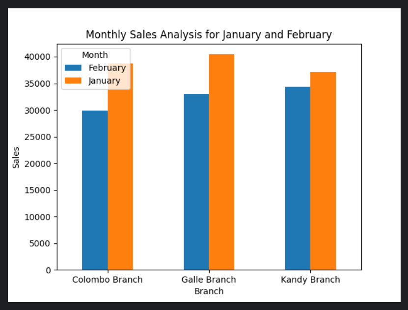
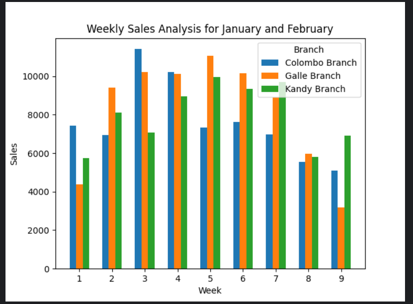
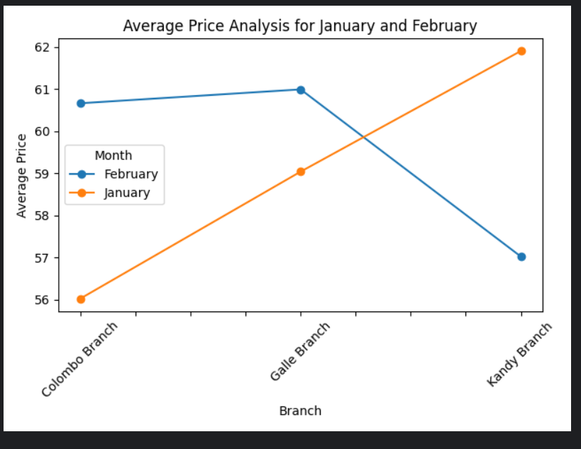
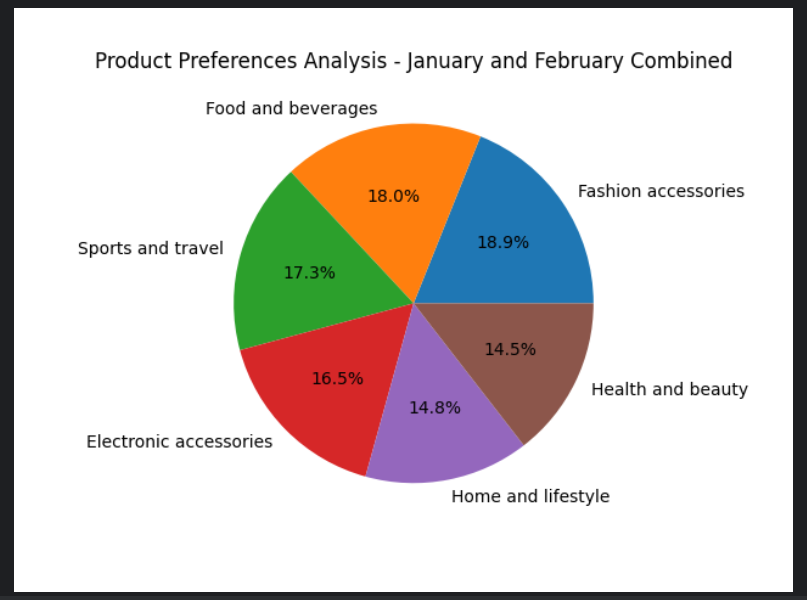
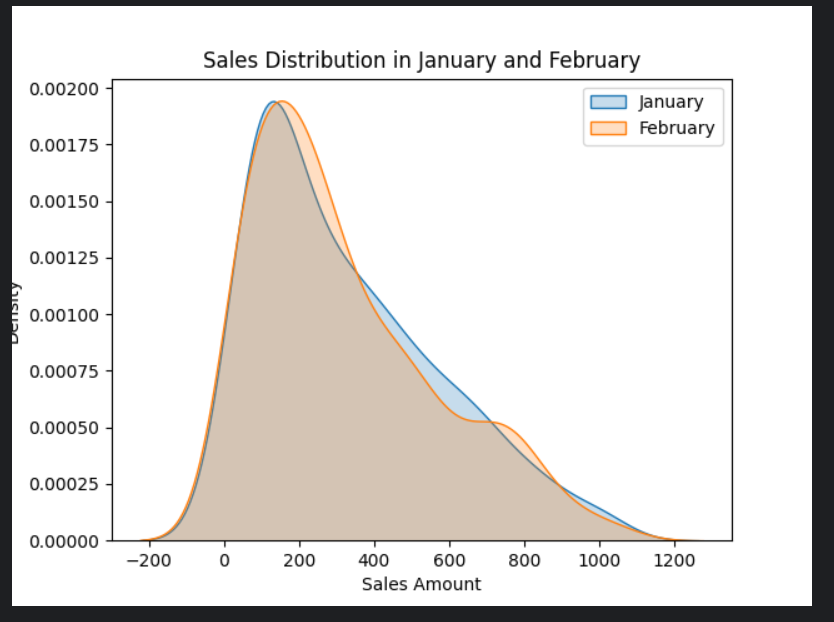
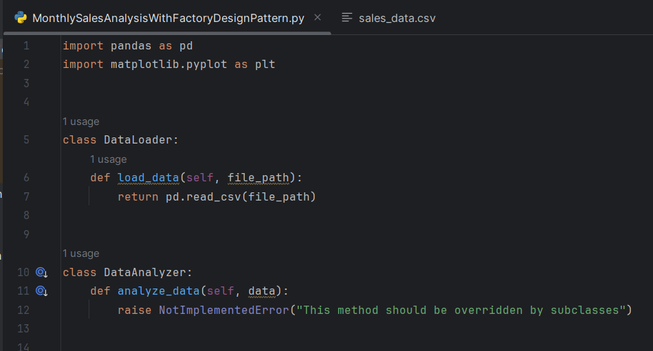
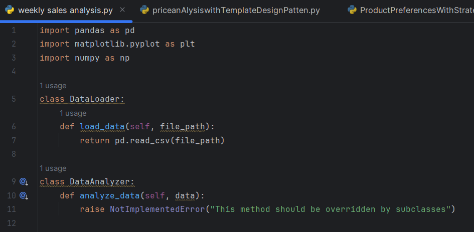
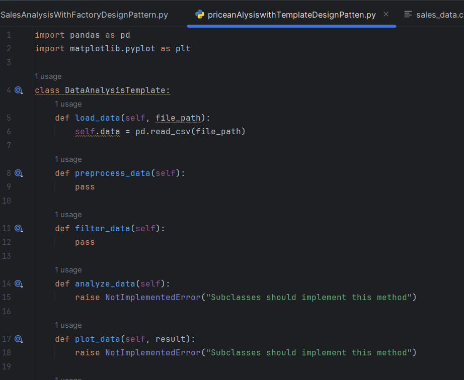
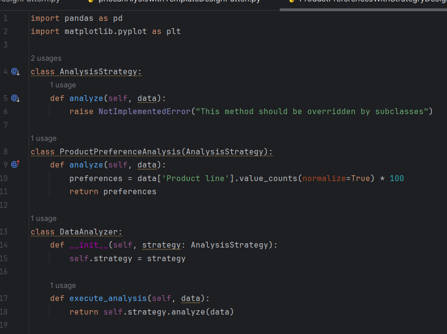
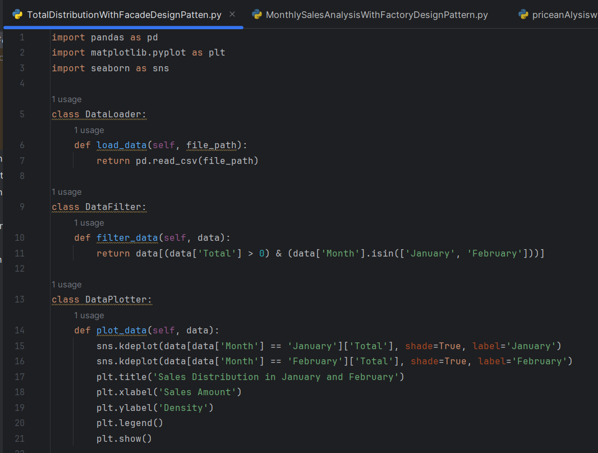
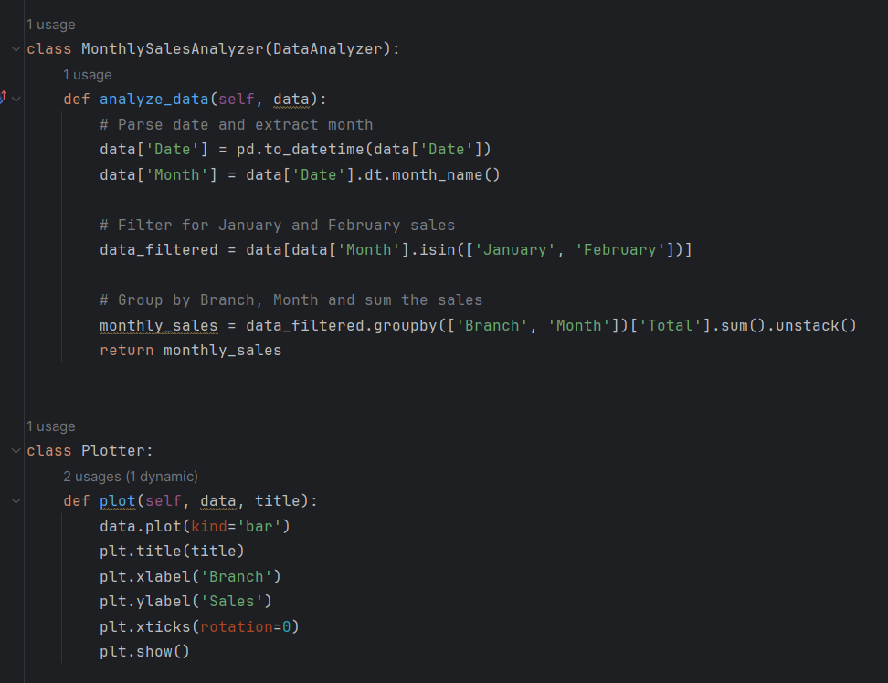
Learning Outcomes
- Processing structured datasets with Python.
- OOP + SOLID in practice.
- Design patterns for data workflows.
- Charts for trends and findings.
- Automated tests + modular clean design.
Project Summary
This project brought together Python, data analysis, software design principles, visualisation, and automated testing to turn raw sales information into insights that support business decision-making.